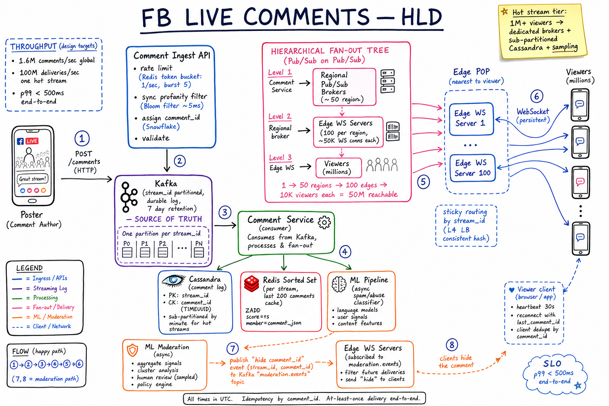
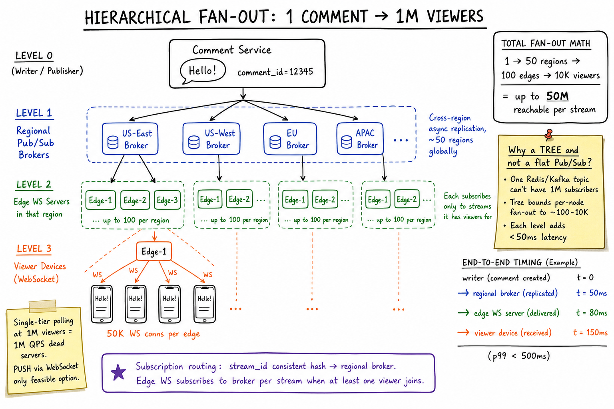
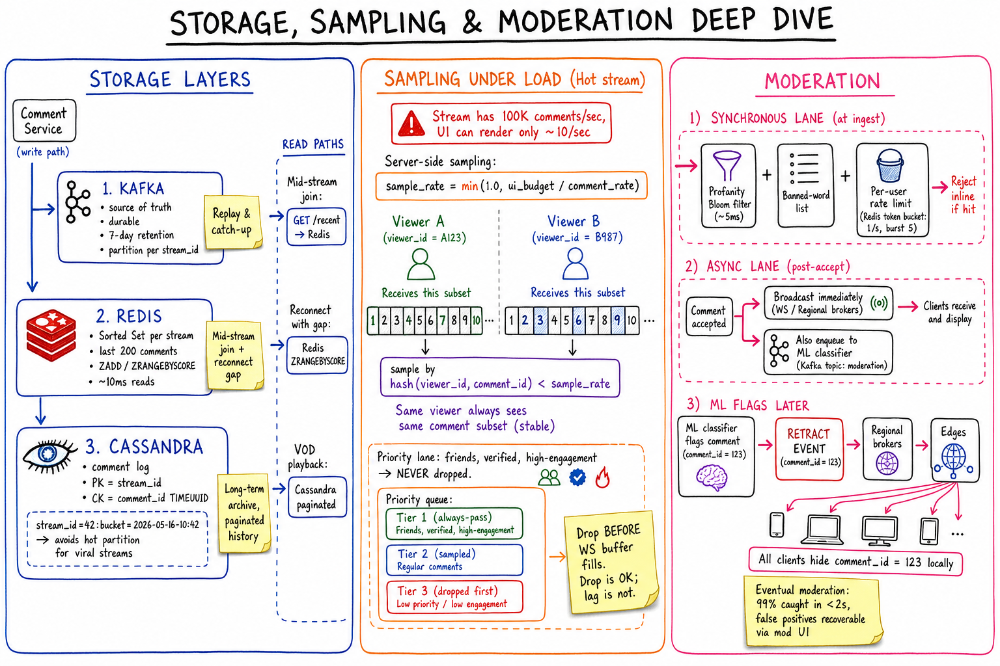

FB Live Comments // HLD
Realtime comments on live video at FB scale: hierarchical pub/sub fan-out (1 comment → 1M viewers in <500ms), WebSocket edge POPs, Kafka ingest + Cassandra log + Redis recent cache, server-side sampling under load, sync + async moderation.

Whiteboard HLD: poster → Ingest API (rate limit + sync profanity filter + Snowflake id) → Kafka (source of truth, partitioned by stream_id) → Comment Service writes Cassandra log + Redis recent cache + async ML moderation. Hierarchical fan-out tree: Comment Service → regional pub/sub brokers (~50) → edge WS servers (100/region, 50K conns each) → millions of viewers over persistent WebSocket. Async moderation can emit retract events.
01 — Requirements
Functional
- Users watch a live video and post comments in real time
- All viewers see new comments within ~200ms
- Show comment history (last N) when joining mid-stream
- Like/react to comments; moderation (hide/delete spam, profanity filter)
- Support hundreds of thousands to millions of concurrent viewers per stream
Non-Functional
- Low latency: end-to-end p99 < 500ms (poster → all viewers)
- High fan-out: 1 comment → 1M viewers
- High availability: 99.99%; degrade gracefully (sampling/drop OK under load)
- Ordering: per-stream causal order; strict global order not required
- Read-heavy: ~1000:1 read:write per stream
02 — Estimation
Concurrent live viewers globally: 100M Avg viewers per stream: 10K -> ~10K active streams Hot streams (celeb/sports): 1M+ viewers Avg comment rate per viewer: 1 / minute -> Global comment rate 100M / 60 ~= 1.6M comments/sec Hot stream fan-out (one stream): 1M viewers x 100 comments/sec = 100M deliveries/sec (one stream!) Storage: 1.6M comments/sec x 200 bytes x 86400s ~= 27 TB/day raw Connection scale: 100M concurrent WebSocket connections globally At 50K conns/edge -> ~2000 edge servers worldwide
03 — Why It's Hard
- Fan-out explosion: 1 write → up to 1M reads, in <500ms
- No polling possible: 1M viewers polling at 1Hz = 1M QPS per stream = dead servers
- Hot streams: viewer count can spike 1000× in minutes (viral)
- UI can't keep up: at 100K comments/sec viewers' screens overflow; must sample server-side
- Spam & abuse: must moderate inline, but cannot block the hot path
- Geographic distribution: viewers worldwide, latency budget tight
04 — Architecture
Poster -> Comment Ingest API -> Kafka (per-stream partition)
|
v
Comment Service (consumer)
| | |
v v v
Cassandra Redis ML Pipeline
(log) (recent) (async)
|
v
Regional Pub/Sub Brokers (~50)
|
v
Edge WS Servers (100/region, 50K conns each)
|
v
Viewers (millions, persistent WebSocket)
Tree-shaped push fan-out: writer -> regional broker -> edge -> viewer. Each level bounds per-node load.
05 — Push vs Pull
| Approach | Pros | Cons | Verdict |
|---|---|---|---|
| Short polling (GET every 1s) | Simple, stateless | 1M viewers × 1Hz = 1M QPS per stream. +500ms avg latency. | Dies at scale |
| Long polling | Fewer requests | Still O(viewers) idle connections; HTTP overhead per message | Marginally better |
| Server-Sent Events (SSE) | One-way push, HTTP-friendly | One-way only (no replies, no presence); proxy issues | OK alternative |
| WebSocket | Bi-directional, persistent, low overhead | Stateful (sticky routing), connection memory | Winner |
WebSocket holds one TCP connection per viewer. Sub-100ms push, ~4KB memory per conn, supports likes/typing/presence back-channel.

Zoom-in: 1 comment fans out through 3 levels — Comment Service → ~50 regional pub/sub brokers (cross-region async replication) → up to 100 edge WS servers per region (each subscribes only to streams it has viewers for) → ~10K viewers per edge over persistent WebSocket. Total reach up to 50M per stream. End-to-end timing: writer t=0 → regional 50ms → edge 80ms → viewer 150ms (p99 < 500ms). One flat pub/sub topic can't have 1M subscribers; the tree bounds per-node fan-out.
06 — Hierarchical Fan-out (Pub/Sub on Pub/Sub)
Why a tree, not a flat topic? No single Redis/Kafka topic can have 1M subscribers; each level bounds fan-out per node to ~50-10K, adds <50ms latency.
| Level | Node | Subscribers | Role |
|---|---|---|---|
| L0 | Comment Service | ~50 regions | Publishes once per comment |
| L1 | Regional Pub/Sub Broker | ~100 edges | Subscribes to relevant streams; mirrors cross-region |
| L2 | Edge WS Server | ~10K viewers | Subscribes to streams it has viewers for; pushes via WS |
| L3 | Viewer device | n/a | Renders comment |
Subscription routing: stream_id consistent-hashed to a regional broker. Edge WS subscribes to a stream's topic only when at least one local viewer is watching it (lazy subscription).
Total reach: 1 → 50 regions → 100 edges → 10K viewers each = up to 50M reachable per stream.
07 — WebSocket Layer
Per-edge capacity
- ~50K persistent WebSocket connections (Linux can do 1M with tuning; leave headroom)
- ~4KB memory per idle conn; CPU dominated by TLS handshakes & periodic heartbeats
Routing
- L4 LB with consistent hashing on
stream_id→ same edge holds all viewers of a stream in that region (better locality, fewer subscriptions) - Anycast or GeoDNS routes viewer to nearest POP
Liveness
- Heartbeat ping every 30s; close after 2 missed
- On disconnect, client reconnects with
last_comment_id; server replays gap from Redis

Zoom-in: three storage layers (Kafka source of truth for replay; Redis sorted set per stream for mid-join + reconnect gap; Cassandra long-term log, sub-partitioned by minute to avoid hot partitions on viral streams). Server-side sampling for hot streams: hash(viewer_id, comment_id) < sample_rate gives each viewer a stable subset. Priority lanes for friends/verified. Moderation: synchronous Bloom filter + rate limit at ingest; asynchronous ML classifier publishes retract events that propagate back through fan-out tree to hide comments client-side.
08 — Storage
| Layer | Tech | Purpose | Notes |
|---|---|---|---|
| Ingest log | Kafka | Source of truth, replay | Partition by stream_id, 7-day retention |
| Recent cache | Redis Sorted Set | Last ~200 comments per stream | ZADD stream:{id}:recent score=ts; ZRANGE for join/reconnect |
| Long-term log | Cassandra | Full archive, VOD playback | PK stream_id, CK comment_id (TIMEUUID); sub-partition by minute for hot streams |
| Moderation events | Kafka topic | Retract/hide events | Consumed by edges & ML pipeline |
Hot partition avoidance: a viral stream with 100K writes/sec to one Cassandra partition is fatal. Sub-partition key: (stream_id, bucket_minute) spreads writes across nodes; reads aggregate buckets.
09 — Ordering
- Global strict order: impossible at this scale (and unnecessary)
- Per-stream FIFO: single Kafka partition per
stream_id→ single-writer ordering - Across viewers: small geographic reordering OK (~tens of ms)
- Client-side: server-assigned
comment_id(Snowflake, time-sortable) used to dedupe + order in UI
Why Snowflake here: compact 64-bit, k-sortable so newer IDs come later, no coordination per comment, generated at ingest API.
10 — Backpressure & Sampling
Hot stream: 100K comments/sec, but UI can render ~10/sec. Pushing everything → WebSocket buffer overflow, OOM, dropped connections.
Server-side sampling (per viewer)
sample_rate = min(1.0, ui_budget / comment_rate) deliver if hash(viewer_id, comment_id) < sample_rate
- Stable hash → same viewer sees consistent subset (not flickering)
- Each viewer gets a different sample → collectively all comments are seen
Priority lanes
- Tier 1 (always pass): friends, verified, high-engagement — never dropped
- Tier 2 (sampled): regular comments — subject to
sample_rate - Tier 3 (dropped first): low-reputation, throwaway accounts
Drop before the WS write buffer fills. Drop is acceptable; lag is not (viewers leave).
11 — Moderation
Synchronous (at ingest, <10ms budget)
- Profanity Bloom filter of banned phrases
- Per-user rate limit: Redis token bucket, 1/sec burst 5
- If hit → reject inline with 429 / 422
Asynchronous (post-accept)
- Comment broadcast immediately AND enqueued to ML classifier (Kafka
moderation.events) - ML uses language models, user signals, content features
- If flagged: emit
{type: "retract", comment_id, stream_id}back through the same fan-out tree - Edges forward to clients; clients hide locally
Eventual moderation: ~99% caught within 2s. False positives recoverable via mod UI.
12 — Mid-Stream Join & Reconnect
GET /streams/{id}/recent?limit=50 → Redis sorted set → instant history of last 50 comments.last_comment_id.ZRANGEBYSCORE on Redis to get missing range. If gap > Redis retention, fall back to Cassandra (paginated).13 — Scaling
- Stateless edge WS servers behind L4 LB: horizontal scale, warm pool for spike absorption
- Cassandra: shard by
stream_id, sub-partition by minute for hyper-hot streams - Geographic: regional pub/sub brokers; cross-region async replication of moderation events
- Hot stream isolation: auto-detect streams >100K viewers → route to dedicated fan-out cluster (separate brokers, larger Redis cache, aggressive sampling)
- Auto-scaling triggers: CPU on edge, broker subscriber count, Kafka consumer lag
- Connection draining: on edge scale-in, drain WS connections gradually (clients reconnect to new edge)
14 — Edge Cases
- Thundering herd on stream start (1M users joining in 10s) → CDN-cached initial history page; staggered WS upgrade with jittered backoff
- Network flap → client buffer + dedupe by
comment_idon reconnect - Banned user's comment already broadcast → emit retract event; edges propagate; clients hide
- Late-arriving comment (>5s old, e.g. from offline sync) → drop or mark stale to avoid confusing viewers
- Streamer ends stream → flush Kafka; freeze comment log; switch to VOD-style paginated reads from Cassandra
- Edge POP outage → clients reconnect via GeoDNS to next-nearest POP; some loss possible on in-flight messages (replay covers it)
- Region partition → regional brokers buffer; cross-region replication catches up post-partition
15 — Real-World Equivalents
| System | Notes |
|---|---|
| FB Live | Custom pub/sub on top of Wormhole/Scribe; MQTT-like client protocol |
| YouTube Live Chat | HTTP long-polling + Spanner/Bigtable backed |
| Twitch IRC | Modified IRC over TCP/WebSocket; chat servers sharded by channel |
| Slack/Discord | WebSocket gateway + per-channel actors (similar pattern) |
| Twitter Spaces / Audio rooms | WebRTC for audio; WS for chat sidebar |
16 — Interview Q&A
Push or pull, and why?
How do you fan out one comment to 1M viewers?
What if Cassandra is down?
How do you handle a viral stream going from 1K to 1M viewers in a minute?
Strict ordering across all viewers — possible?
How do you prevent spam during a viral moment?
How to handle a reconnect after 30s offline?
last_comment_id on reconnect. Server does ZRANGEBYSCORE on Redis sorted set to fetch the gap. If gap > Redis retention, fall back to Cassandra (paginated). Client dedupes by comment_id (Snowflake ensures uniqueness).Where do likes/reactions on comments go?
HINCRBY with periodic flush to Cassandra (every 5-10s). Broadcast aggregated counter updates every 1-2s as a single message rather than per-like — saves >100× bandwidth.